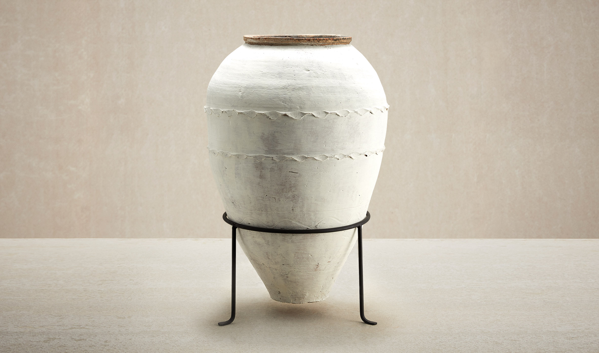
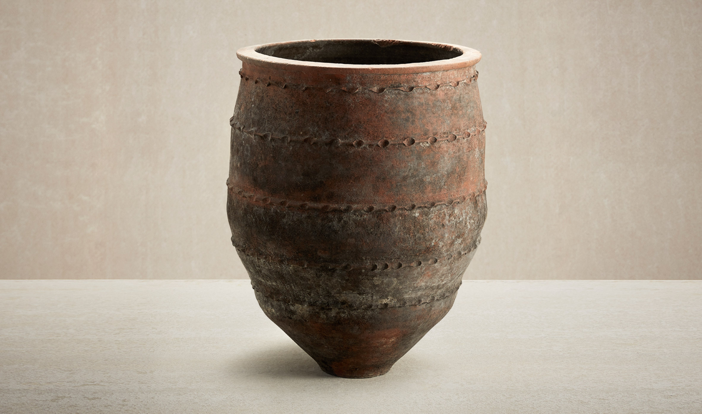
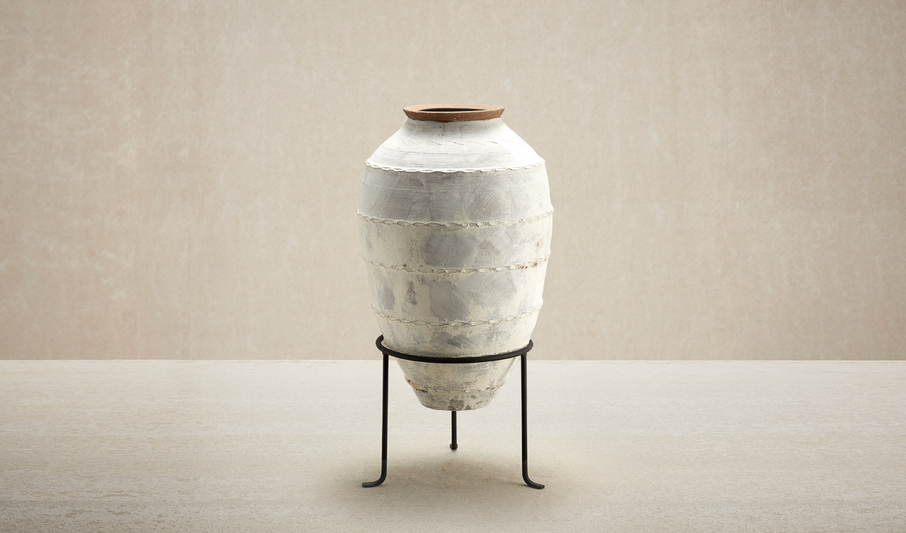
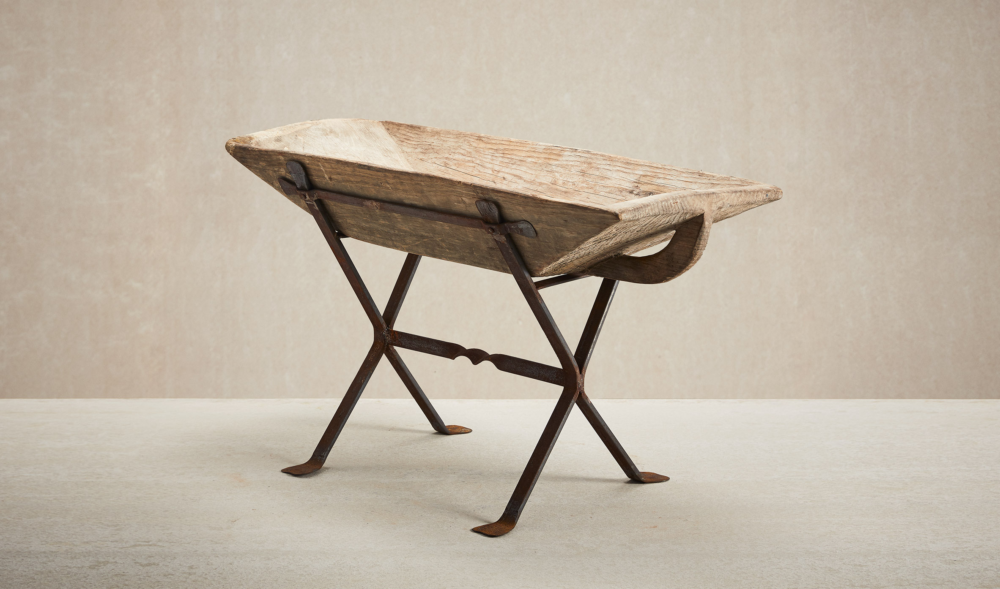
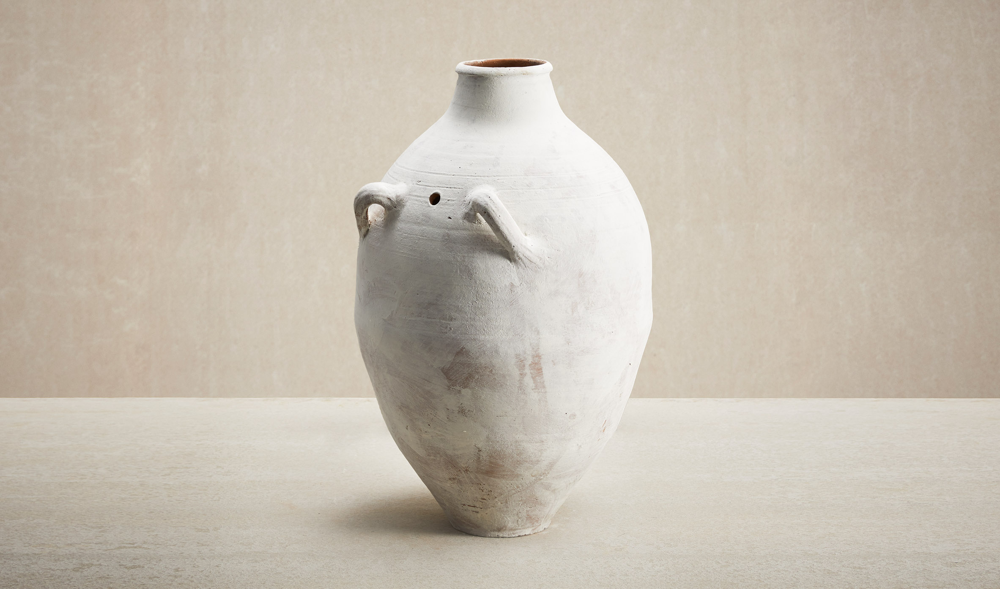
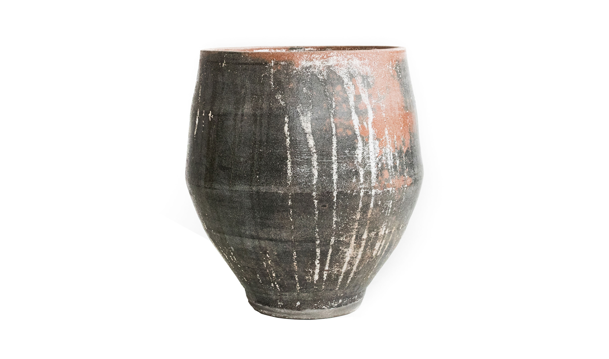

|  |  |
|  |  |
|  |  |
Kela Lime Grand
Grands pots en argile antiques et traditionnels lavés à la chaux Kela
Un superbe pot traditionnel lavé à la chaux, nos grands pots Kela sont
tous uniques dans leur forme et leurs marques.
Accompagnés d'un support en métal complémentaire,
ces pots peuvent être utilisés comme pièces décoratives
avec ou sans plantes et constituent un excellent ajout
aux grappes de pots ou pour être
associés à nos bocaux en verre Dame-jeanne et nos auges en bois.
Levéa trouve
Levea trouve des pots en argile antiques et traditionnels rares
Chacun de ces pots Levea est sélectionné individuellement.
Nous recherchons des pots uniques par leur caractère,
leur forme et leur âge.
Kela Lime Petit
Petits pots en argile antiques et traditionnels lavés à la chaux Kela
Nos petits pots Kela se présentent sous différentes formes et finitions,
chaque pot ayant sa propre apparence et ses propres caractéristiques.
Accompagnés d'un support en métal complémentaire, ces pots peuvent
être utilisés comme éléments décoratifs avec ou sans plantes et
constituent un excellent ajout aux grappes de pots.
Abreuvoir en bois
Abreuvoir en bois sculpté à la main avec support en fer
Nos incroyables auges en bois sculptées à la main sont disponibles
dans une gamme de tailles et de formes,
chacune avec un support en fer spécialement conçu.
Ces bacs sont parfaits comme jardins d'herbes aromatiques
et s'adaptent à des espaces compacts,
ou peuvent être utilisés comme éléments décoratifs dans de plus grands jardins.
Avec ou sans plantes, ces bacs sont un spectacle spectaculaire.
Voi
Pots en argile antiques et traditionnels Voi
Nos Voi Pots sont une fonctionnalité complète en eux-mêmes.
Les belles courbes et les poignées complexes leur donnent
une apparence exquise et sculpturale.
Ils sont également parfaits pour les plantes en cascade et peuvent
être associés aux produits de nos collections Antique,
LANDARE et Contemporary.
Noix de gomme
LANDARE Pots en argile traditionnels Gumnut
Fabriqué selon des techniques traditionnelles de poterie thaïlandaise,
le pot LANDARE Gumnut est une grande jardinière
adaptée aux arbustes remarquables.La belle patine accentue la ressemblance